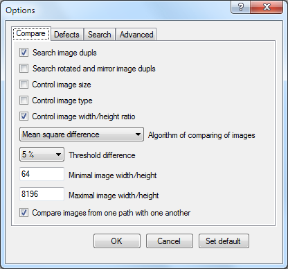
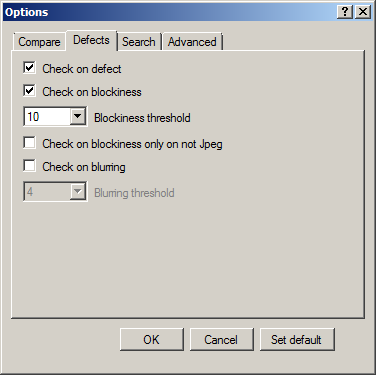
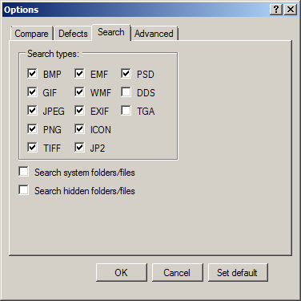
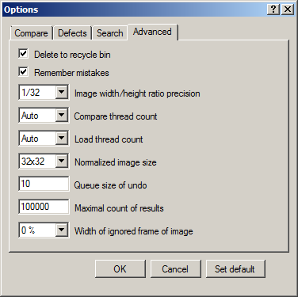

Options Window
Customize your search is carried out in the options window. Open it may be either the main window using the Options button

or select the Search - Options item from the Main Menu. In this window, there are three groups of settings: check options, search options and additional options. Each of these groups is located on the corresponding tab.
Check Options
On the Compare tag
there are following settings:
Search image dupls - determines the need to look for duplicate images. By default it is enabled.
Search rotated and mirror image dupls - Enabling this option allows you to search rotated and mirrored duplicate images. It has to do more comparisons; therefore search is slowed down eight times. By default, this option is disabled.
Control image size - if this options is enabled then the program take into account the size of pictures. For example, the picture sizes 1024x768 and 800x600 will be different, even if they are to be shown the same thing. By default, this option is disabled.
Control image type - if this options is enabled then the program take into account the type of image in comparison. For example, images in PNG and GIF formats will be different, regardless of their contents. The default option is disabled.
Control image width/height ratio - when you turn on this option, the program checks the ratio of width and height of images. For example, this allows us not to compare the square and rectangular images among themselves, which greatly accelerates the search. The degree of difference ratio of the width and height of images is governed by the parameter Image width/height ratio precision, located on the Advanced tab options (see below). By default, this option is enabled.
Algorithm of comparing of images - algorithm by means of which pictures are compared. In standard fast algorithm - 'Mean square difference' calculate a mean square deviation of brightness for each couple of images. He fast, but has big percent of false positives for pictures with a big uniform background and can not find strongly changed images. When comparing pictures by means of an index of structural similarity ('SSIM') can find duplicates among strongly changed pictures, and also images with a big uniform background are better compared, but calculation more slowly. Also 'SSIM' is very sensitive to the normalized size of image. It is better not to use him at the sizes less than 128x128. The default setting is 'Mean square difference'. This parameter is duplicated on the Tool Bar.
Threshold difference - or value mean square deviations of brightness of pictures or value of an index of structural similarity in case of which value below value determined by this parameter, they are considered as duplicates. value determined by this parameter, then the pictures are duplicates. When setting this option at a low level, the program can not detect some of the duplicates. If it is equal to zero then program will be able to find only fully identical images. If he set too high, then increase the likelihood of false positives. Also worth noting that the increase in this parameter leads to a slower speed of the algorithm and vice versa. It can vary in the range from 0 to 15% for algorithm 'Mean square difference' and from 0 to 50% for algorithm 'SSIM'. By default, this parameter is equal to 5% for algorithm 'Mean square difference' and 30% for algorithm 'SSIM'. This parameter is duplicated on the Tool Bar.
Minimal image width/height - sets the minimum width/height of images is necessary that they will be checked for the presence of defects or duplicates. This option allows you to exclude from the search too small images. The default setting is 64.
Maximal image width/height - sets the maximum width/height of images is necessary that they will be checked for the presence of defects or duplicates. This option allows you to exclude from the search too large images. The default setting is 8192.
Compare images inside one directory - when this option is enabled, the program compares with each other the pictures located both in one directory and in the different. Otherwise, the program will compare among themselves only the images which aren't lying in one directory. By default, this option is disabled.
Compare images from one path of search with one another - when this option is enabled, the program compares one with another pictures that are located in the same search path. Otherwise, the program will only compare the images from different search paths. By default, this option is disabled.
Check on defect - option specifies whether you want to check the images for defects. By default, this option is enabled.
Check on blockiness - the option defines, whether it is necessary to check pictures for existence of artifacts of compression of JPEG - a blockiness. The blockiness is defined by the greatest amount of gradients of brightness for extreme pixels of units 8x8. By default, this option is enabled.
Blockiness threshold - percent of the amount of gradients in case of which the image is considered the defective. The chess black-and-white grid will have 100% with a size of cell of 8 pixels. The counted value will testify not necessarily to the worst visual quality in comparison with the picture with smaller value and vice versa. By default this parameter is equal 10.
Check on blockiness only on not Jpeg - the option defines, whether it is necessary to check pictures for existence of artifacts of compression of JPEG - a blockiness only not in Jpeg files. It allows to find only the pressed images, without showing the simply strongly oblate. If at the PNG or BMP file there are explicit artifacts of compression it means that the source file was saved in other format with certainly big size. By default, this option is enabled.
Check on bluring -the option defines, whether it is necessary to check pictures for too big blur of the image. Blur is calculated a gradient of the second derivative (which it is maximum on lines and edges) for the original image and its reduced options. Exact value is defined by method of the linear interpolation. By default, this option is enabled.
Bluring threshold - blur radius in case of which the image is considered the defective. So far the algorithm is incomplete and high blur for landscape images is shown. By default this parameter is equal 4.
Search types:
BMP - this option specifies whether you want to search for BMP (BitMaP) pictures. They usually have an extension *.bmp, *.dib or *.rle. By default, this option is enabled.
GIF - this option specifies whether you want to search for GIF (Graphics Interchange Format) pictures. They usually have an extension *.gif. By default, this option is enabled.
JPEG - this option specifies whether you want to search for JPEG (Joint Photographic Experts Group) pictures. They usually have an extension *.jpeg, *.jfif, *.jpg, *.jpe, *.jiff, *.jif, *.j, *.jng or *.jff. By default, this option is enabled.
PNG - this option specifies whether you want to search for PNG (Portable Network Graphics) pictures. They usually have an extension *.png. By default, this option is enabled.
TIFF - this option specifies whether you want to search for TIFF (Tagged Image File Format) pictures. They usually have an extension *.tif or *.tiff. By default, this option is enabled.
EMF - this option specifies whether you want to search for EMF(Enhanced MetaFile) pictures. They usually have an extension *.emf or *.emz. By default, this option is enabled.
WMF - this option specifies whether you want to search for WMF(Windows MetaFile) pictures. They usually have an extension *.wmf. By default, this option is enabled.
EXIF - this option specifies whether you want to search for EXIF(EXchangeable Image File) pictures. They usually have an extension *.exif. By default, this option is enabled.
ICON - this option specifies whether you want to search for ICON(Windows ICON image format) pictures. They usually have an extension *.icon, *.ico or *.icn. By default, this option is enabled.
JP2 - this option specifies whether you want to search for JP2(JPEG 2000 image format) pictures. They usually have an extension *.jp2, *.j2k, *.j2c, *.jpc, *.jpf or *.jpx. By default, this option is enabled.
PSD - this option specifies whether you want to search for PSD(Photoshop Document) pictures. They usually have an extension *.psd. By default, this option is enabled.
DDS - this option specifies whether you want to search for DDS(DirectDraw Surface) pictures. They usually have an extension *.dds. By default, this option is enabled.
TGA - this option specifies whether you want to search for TGA(Truevision Graphics Adapter) pictures. They usually have an extension *.tga or *.tpic. By default, this option is enabled.
Search system folders/files - the option specifies whether you want to search for pictures in the system directories. By default, this option is disabled.
Search hidden folders/files - the option specifies whether you want to search for pictures in the hidden directories. By default, this option is disabled.
Delete to recycle bin - when you turn on this option, files will be removed in the recycle bin. Otherwise, they will be deleted permanently. By default, this option is enabled.
Remember mistakes - option specifies whether you want to use when searching a database of false positives. So the user during the processing of search results can mark false positives, for example, using the Mark current result as a mistake button of the на Preview Panel. Then, when re-search more, these results will not be shown. By default, this option is enabled.
Image width/height ration precision - option determines the accuracy which must be respected by the ratio of width/height of the compared images. It can be 1/8, 1/16, 1/32 or 1/64. The default value is 1/32.
Compare threads count - option specifies the number of threads of comparison, which are created when searching for duplicates. It can take values Auto (number of threads is determined by the program), 1, ..., the number of processor cores in the system. The default value is Auto.
Load thread count - option specifies the number of threads of image loading, which are created when searching. It can take values Auto (number of threads is determined by the program), 1, ..., the number of processor cores in the system. The default value is Auto.
Normalized image size - this parameter can be described as follows: because images can be absolutely arbitrary size, then the correct comparison of their need to lead to a common denominator. To do this, all images are scaled to the same size and converted into 8-bit gray. Then have these normalized images are compared with each other and stored in a database. This option determines the size of these images. The more normalized the size of images, the higher the accuracy of the program. Adverse effects of this increase will be decrease of speed of the program, and large requirements to the memory and the free disk space (to store the database of previously scanned images). Can take the values 16x16, 32x32, 64x64 or 128x128. The default value is 32х32.
Queue size of undo - this parameter controls the maximum number of actions that the user can cancel a row. This parameter can range from 0 to 16. The default value is 10. Note that in order to cancel the operation, the program needs to save its intermediate state and changes made during this operation. For example, when deleting an image, there is no removal of images, but their hide and rename (received hidden temporary files are deleted later). Naturally, these operations require additional resources and can slow down the program. At low values of the queue size is performed saving of program resource. In particular, if this parameter has a zero value, images will be removed directly without intermediate renaming and hiding, which speeds up the program.
Maximal count of results - this parameter controls the maximum number of results that a program can be found in one search. For example, if during the search program will be achieved this the number of results, the search will be automatically terminated. This restriction is useful to save program resources allocated to the graphical representation of the results list. By default, this value is 100000.
Width of ignored frame of image - This parameter determines the width of frame of the image, the contents of which will be ignored during the comparison of images. This option is relevant if you want to compare pictures with frames of different colors or small inscription on the edge. By default, this value is 0 %.
On the Defects tag
there are following settings:
Search Options
On the Search tag
there are following settings:
Note that necessarily must be included either option Check on defect, either option Search image dupls.
Advanced options
On the Advanced tag
there are following settings:
Note: most users it is better not to change the settings on this tab.